Додаємо зміну пароля, видалення користувача, відновлення пароля та оновлення профілю у контролер(з валідацією даних та обробкою помилок)
controllers/auth.controller.js
Зображення
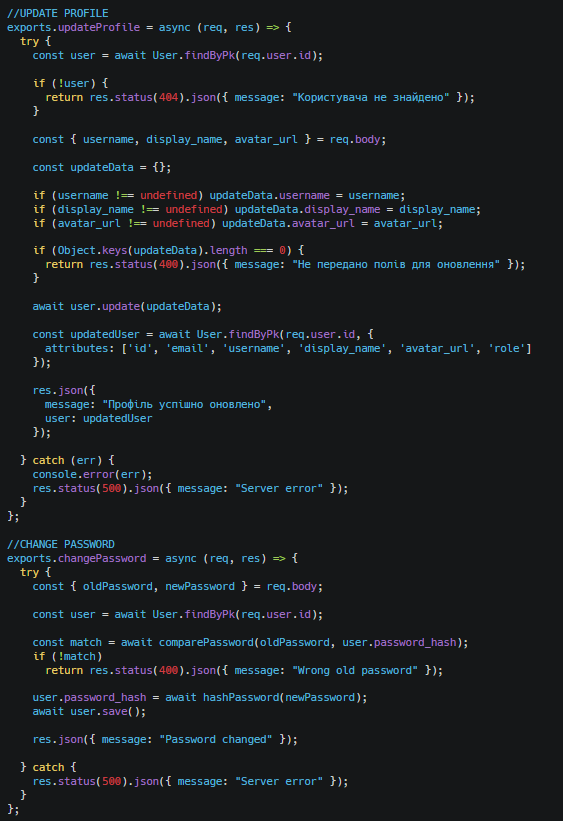
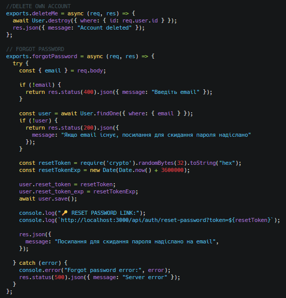
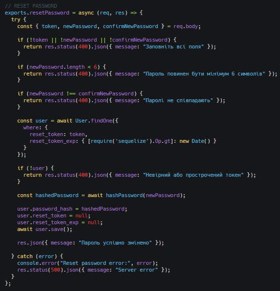
Протестуємо API через Postman та проведемо аналіз отриманих результатів
Оновлення профілю + (валідація даних, обробка помилок)
Зображення
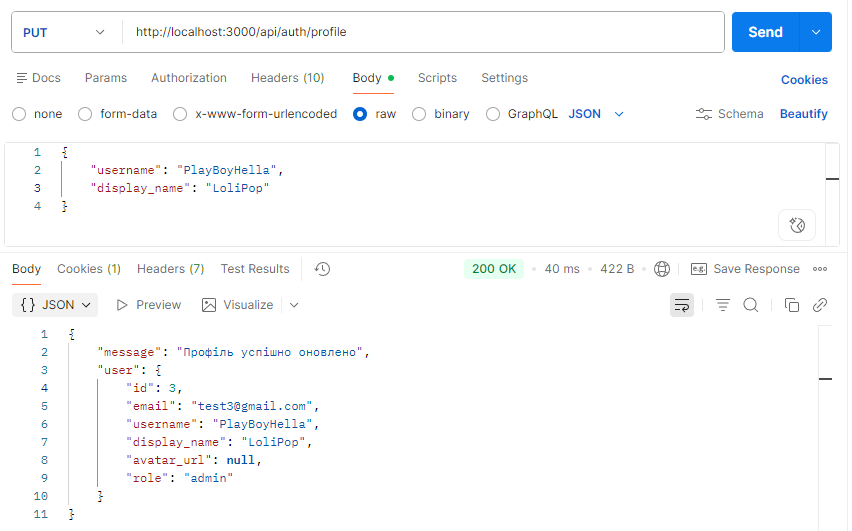
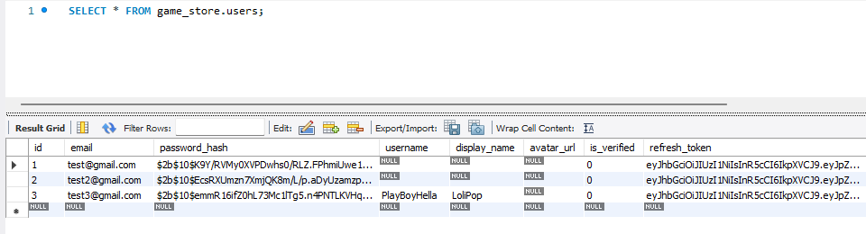
Зміна пароля + (валідація даних, обробка помилок)
Зображення
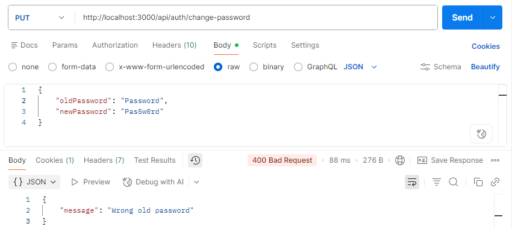
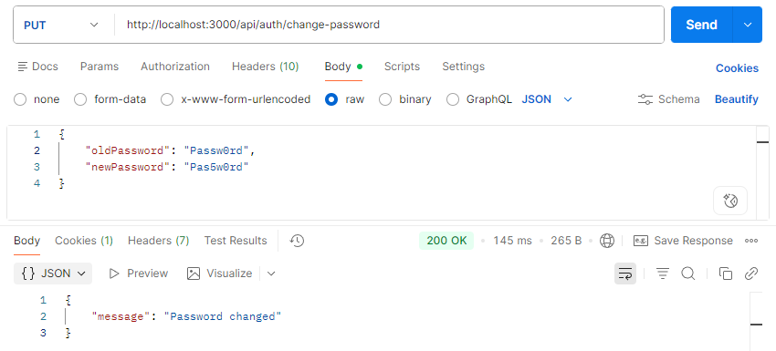
Видалення користувача(свій профіль)
Зображення
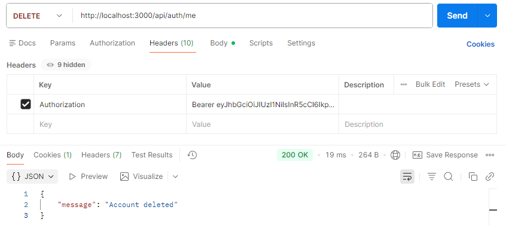
Відновлення пароля + (валідація даних, обробка помилок)
Зображення
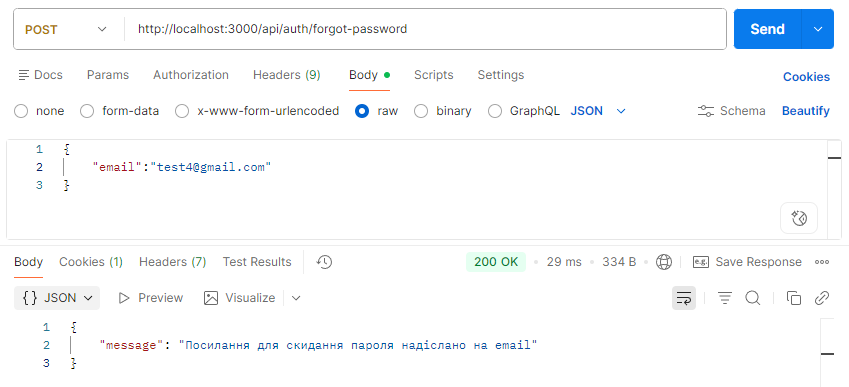
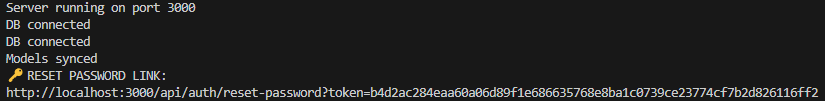
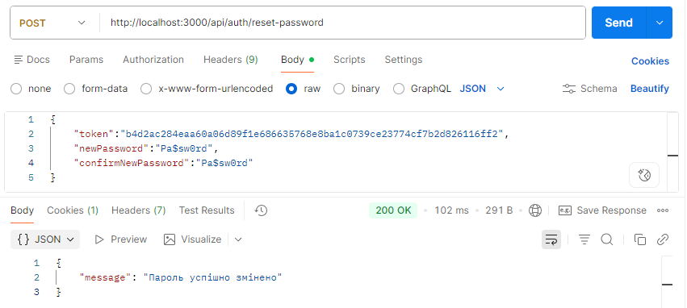
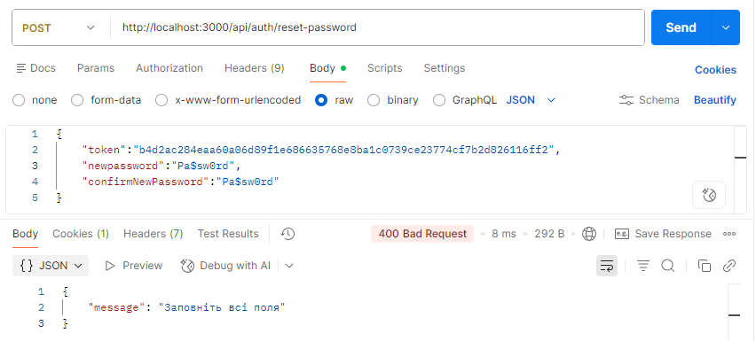